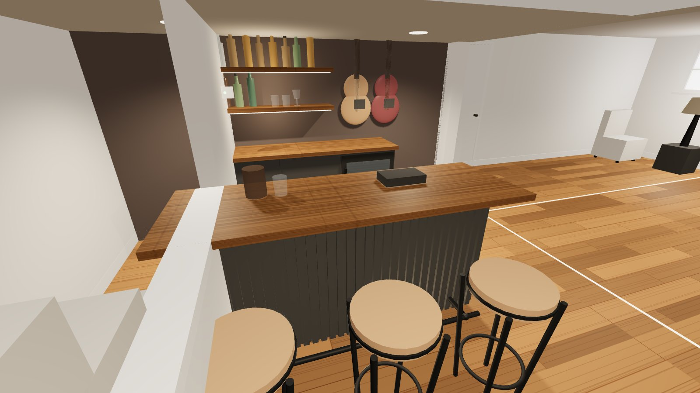
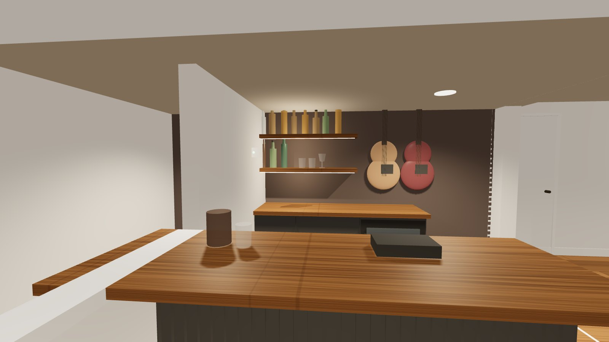
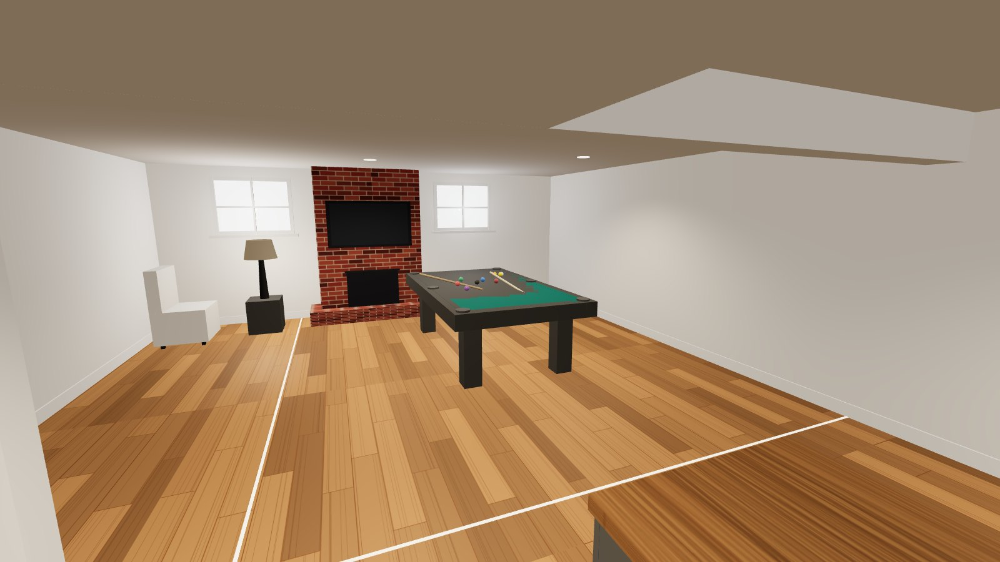
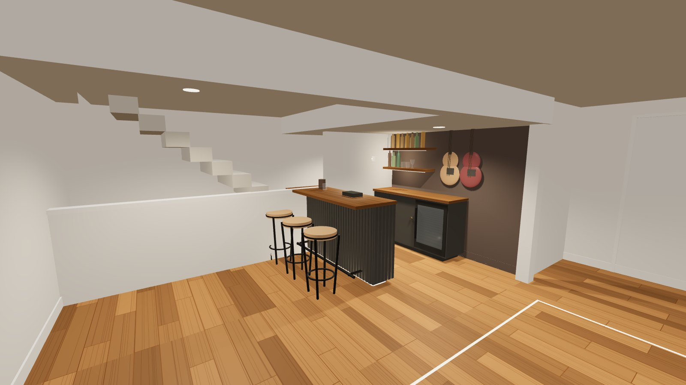
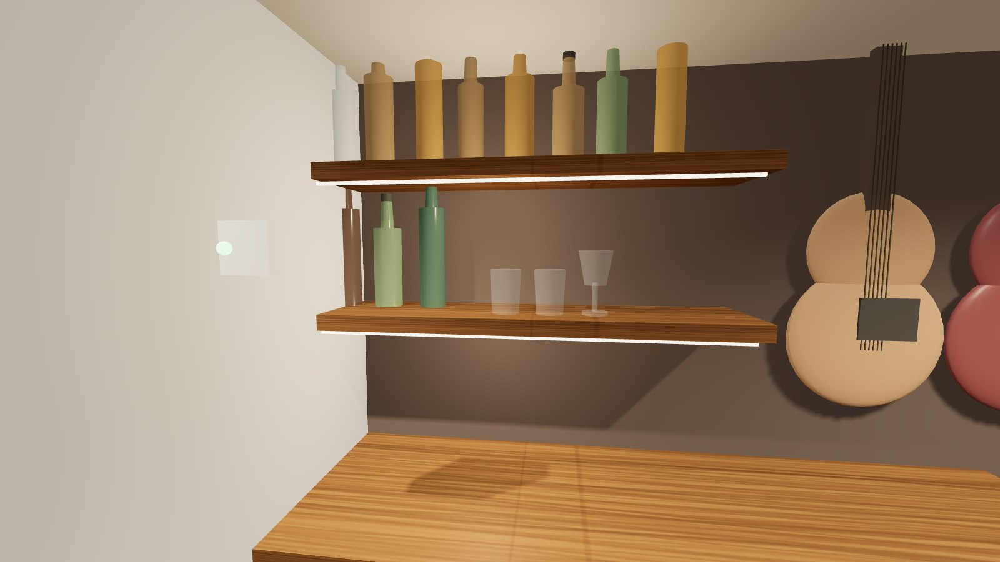
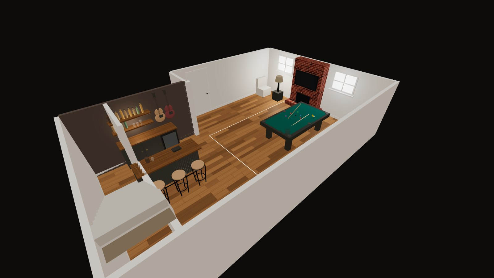

A six-foot slat-front bar in black and acacia for the basement game room, set in front of the blank wall at the foot of the stairs and facing the pool table, with the upstairs wet bar alcove converted into a matching service station. Designed from your photos and walkthrough videos to sit inside the house you already have: black steel, warm wood, cognac leather, brick, brass in small doses.
Every finished room in the house runs the same formula: a warm white shell, one heavy black element, one piece of warm organic wood, and a texture that carries the room (brick, leather, a geometric wallpaper). The dining table is the clearest statement of it: live-edge acacia split by a black river, on black steel. The media console repeats it in reverse: black box, round brass pulls. The powder room shows what the house does when it goes dark: near-black walls, fine geometric line, one warm light.
The bar should be the dining table's sibling, not a new idea. Black slatted body, acacia top, black pipe foot rail, brass only at the pulls and shelf brackets. The back wall behind it goes the powder-room route: deep espresso-black, so bottles and the guitars read like objects in a case.
The counterargument, which is real: the alcove already has cabinetry and probably plumbing, so the cheapest way to "a sick bar" is to upgrade the alcove alone for about a quarter of this budget and skip the freestanding bar entirely. If money is the binding constraint this month, do that first and stop. The reason I still recommend the basement bar is that the basement is already a game room with nothing to anchor it: a pool table, a brick fireplace, a twelve-foot blank wall and a landing with no purpose. A bar is the one piece of furniture that makes that wall and that floor make sense, and a bar next to a pool table gets used in a way a bar in a front room never does. confidence: moderate
The blank wall at the foot of the basement stairs is the back-bar wall. It is long, it is unbroken, and it sits under the dropped soffit with two recessed cans already in it, which is exactly where a lit shelf wall wants to be. The bar sits parallel to that wall, 42 inches out, so one person works behind it with the fridge door open. Stools go on the open side. Seated guests face the shelves; the bartender faces the room and the pool table. The pool table keeps its five feet of cue clearance on every side, and the bar stays outside that line.
Two basement facts shape the design. The ceiling is low, roughly seven and a half feet under the soffit by the look of it, so the back bar stays horizontal: a low cabinet and two long shelves, no tall hutch. And basements hold humidity, so the slats are poplar rather than MDF, the plinth gets adjustable feet for a floor that is never dead flat, and nothing sits directly on the vinyl plank.
The whole basement is modeled in a browser page you can walk around in, with the bar, back bar, pool table and cue clearance in place. Click the scene to look around, use W A S D to walk, or drag on a phone. Open the Dimensions panel, type in the real wall length and ceiling height, and the model rebuilds around them. The still frames below come from that model.






The post you sent (Pieter Levels, 7 Nov 2026) argues that a model like this can design furniture part by part, hand you a bill of materials, and let you order raw stock and assemble it yourself, skipping the brand markup that turns plywood and a slab into a four-figure retail bar. He puts the saving at about 85% against premium brands and points at Blender and FreeCAD as the free tools the model can drive. That is exactly the shape of this book: parts, dimensions, a cut list, a build order, a priced bill of materials, and now a 3D model to check it in. The one place I disagree with the framing is the percentage. Against a premium brand, 85% is plausible. Against a mid-market slat bar, this build saves 40 to 60%, and the saving is almost entirely labor and markup on the top and rail.
Standard bar ergonomics, nothing exotic: a 42" finished height, 25" of top with 11" hanging over the guest side for knees, a foot rail 7" off the floor, 30" stools. The body is a plywood box on a recessed plinth, faced with vertical 1.5" slats on a 0.75" gap. Painted one color, the gaps read as shadow lines and the whole thing goes quiet and expensive-looking. The acacia top is a stock butcher block, the same species as your dining table, oiled dark so the black river reads as family.
Two sheets of 3/4" plywood, pocket-screwed and glued. Front panel is one piece (72 × 37.5") so the slat field has no seams. Ends 13.25" deep so they tuck behind the front. One center divider, two shelves. Painted inside and out in the console black.
1.5" × 0.75" strips on a 0.75" gap, glued and 18-ga pinned to the painted front and ends. In a basement use 1 × 2 poplar, 22 eight-foot sticks, two slats per stick. MDF swells with humidity and telegraphs every edge through the paint. Rip MDF only if you run a dehumidifier year-round and the basement stays under 50% RH.
Stock acacia butcher block, 74 × 25 × 1.5". Sand to 180, one coat of a dark walnut oil stain to pull it toward the dining table, then a hardwax oil or Waterlox for spill resistance. Fix from below with figure-8 fasteners so it can move.
Adjustable leveling feet on the plinth (six, 3/8" thread), because basement slabs and the vinyl plank over them are never flat. Keep the plinth 3/4" off the floor on the feet so air moves under it. Seal every ply edge. Put the LED driver inside the body, not on the floor. If you do not already run a dehumidifier down there, budget one; it protects the acacia and the pool table felt alike.
1" black iron pipe foot rail, 72" plus two 90° elbows and flanges, degreased and clear-coated. One 2700K COB LED strip under the plinth on a dimmer. Brass only on the back bar: round brass pulls that match the media console.
Paint the blank wall in the powder-room register: a deep espresso-black, matte, from the floor to the soffit. Against it, a 72" low cabinet at 36" with a beverage fridge in the right bay, two long floating shelves on the left, and the guitar that already lives down here (plus any others) hung vertically on the right where there is clear wall above the counter. Lit by the shelf strips, the guitars become the art instead of clutter on a stand. The wall is long enough that you can go to 96" of shelf if the budget allows; the drawing below shows the 72" version.
Upgrade path for later: run black poplar slats across the whole wall behind the shelves, floor to soffit. It is the same slat language as the bar and it is the single most photographed version of this idea. It costs about $350 in poplar and a long Saturday, so it is in the budget as an option, not a line.
From the walkthrough video, the alcove is the recessed niche you pass between the living room and the dining room: a white base cabinet with drawers below, a darker upper shelf or cabinet above. I could not see a sink or faucet in the footage, so the drawings below assume there is a water line and a drain in the base cabinet. If there is not, nothing changes except the faucet line in the budget. confidence: low on the existing layout
The redesign keeps every expensive thing in place: the carcass, the plumbing, the electrical. It changes the five things that are visible. The result should look like the bar in the music room walked down the hall and parked itself in the wall.
Sized for a 72" bar. Every number here moves if your measurements say the bar should be 66" or 78", so treat this as the pattern, not the order. Plywood is 3/4" sanded (birch or maple face). Two sheets cover the body with a 10.5" × 96" strip left over for the divider and nailers.
| Part | Qty | Size (in) | Stock | Notes |
|---|---|---|---|---|
| Front panel (slat substrate) | 1 | 72 × 37.5 | 3/4 ply, sheet 1 | One piece, no seam behind the slats |
| End panels | 2 | 13.25 × 37.5 | 3/4 ply, sheet 2 | Butt behind the front; front overlaps ends |
| Bottom | 1 | 70.5 × 13.25 | 3/4 ply, sheet 2 | Sits on the plinth |
| Shelf | 1 | 70.5 × 12 | 3/4 ply, sheet 2 | At 24"; a second shelf at 12" if you want more bottle storage |
| Center divider | 1 | 34 × 10.5 | 3/4 ply, sheet 1 offcut | Set back 2" from the front |
| Sub-top stretchers | 2 | 72 × 4 | 3/4 ply, sheet 1 offcut | Front and back under the top; figure-8 fasteners into these |
| Plinth frame | 1 | 66 × 8 outside | 2 × 4, four 8-ft sticks | Recessed 3" all round; six leveling feet; LED strip on its outside face |
| Slats | 44 | 1.5 × 0.75 × 37.5 | 1 × 2 poplar, 22 sticks of 8 ft | 32 front + 6 per end. Pitch 2.25". Start and end each face with a full slat |
| Top | 1 | 74 × 25 × 1.5 | Acacia butcher block | 1" overhang each end, 11" at the front |
| Foot rail | 1 | 72 pipe + 2 elbows + 2 flanges | 1" black iron pipe | Elbows turn into flanges screwed to the plinth face at 7" centerline |
| Back-bar shelves | 2 | 48 × 9.25 × 1.5 | 2 × 10 stained, or acacia offcut | Hidden brackets, 2 per shelf, into studs |
| Alcove top | 1 | ≈ 48 × 25 × 1.5 | Acacia block, 4 ft | Template around sink if present |
Pocket screws 1-1/4" coarse (100), wood glue, 18-ga brad nails 1-1/4" for slats, construction adhesive for the plinth, 8 figure-8 top fasteners, 3" structural screws for the plinth to the body, six 3/8" leveling feet with T-nuts.
Bond primer and black cabinet enamel in satin (one gallon covers bar, alcove cabinet and the low back-bar cabinet). Dark walnut oil stain, then hardwax oil or Waterlox on all acacia. Matte espresso-black wall paint, one gallon for the music room wall, one quart for the niche.
Circular saw with a straight-edge guide (or a track saw), drill driver, pocket-hole jig, brad nailer (borrow one; a $30 manual nailer also works for poplar slats), random orbit sander, 4 ft level, stud finder, clamps.
A table saw is not required for the poplar version; a miter saw or a circular saw with a stop block cuts 44 slats to length in an hour. A pipe clamp pair and a square make the carcass come out true.
Three weekends if you have the tools and a garage. Paint before assembly wherever possible; painting slats after they are on is the step that ruins the finish.
Big-box retail at full price, no coupons, no Marketplace luck. Prices are from memory of recent ranges and should be checked at checkout; lumber and butcher block move the most. confidence: moderate, ±15%
| Line | What | Low | High |
|---|---|---|---|
| Bar body | 2 sheets 3/4" sanded ply, 22 poplar 1 × 2s, four 2 × 4s, leveling feet | $300 | $370 |
| Bar top | Acacia butcher block 74 × 25 × 1.5 | $230 | $320 |
| Foot rail | 1" black pipe, elbows, flanges, clear coat | $60 | $90 |
| Paint | Bond primer + 1 gal cabinet enamel, 1 gal + 1 qt wall paint | $150 | $200 |
| Wood finish | Stain + hardwax oil or Waterlox for all acacia | $55 | $90 |
| Lighting | Two 2700K COB strips, drivers, dimmers | $60 | $110 |
| Fasteners | Pocket screws, brads, glue, figure-8s, filler | $45 | $70 |
| Back-bar cabinet | 2 IKEA BESTÅ frames + doors, or a second slat box | $180 | $280 |
| Shelves and brackets | Two 2 × 10s or acacia offcut, 4 hidden brackets, guitar hangers | $90 | $150 |
| Second acacia block | 4 ft × 25, for alcove top and shelves | $130 | $190 |
| Alcove hardware | Brass knobs, brackets, LED, one quart paint | $90 | $150 |
| Core build | Everything above | $1,390 | $2,020 |
| Stools | 3 × black steel with tan leather seat; Marketplace first | $240 | $480 |
| Beverage fridge | 24" undercounter, used | $150 | $350 |
| Bar faucet | Only if the alcove has a sink | $90 | $160 |
| Pocket-hole jig | Only if you do not own one | $45 | $140 |
| Full slat wall | Optional: poplar slats across the back wall, floor to soffit | $300 | $400 |
| Dehumidifier | Only if the basement does not already have one | $180 | $260 |
| All in | Core + every option | $2,395 | $3,810 |
For comparison, a 6 ft slat-front bar with a hardwood top from a furniture retailer runs $1,800 to $3,500 for the bar alone with no back bar, no lighting, and a laminate or veneer top. The DIY version here puts the money into the two things you touch: the top and the rail.